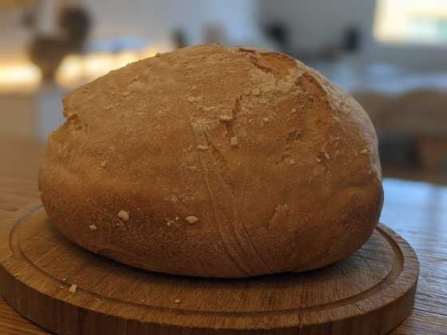
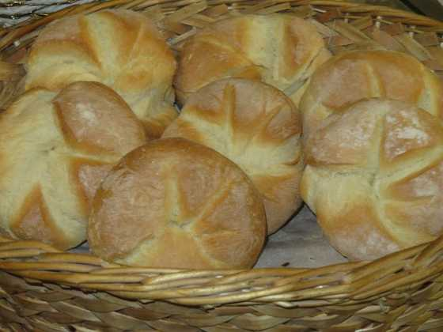
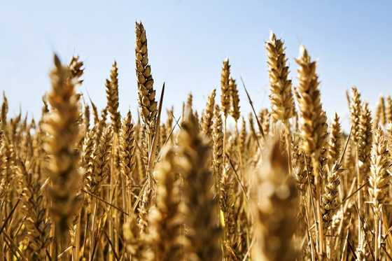
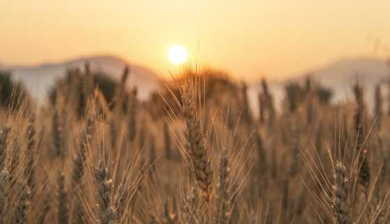
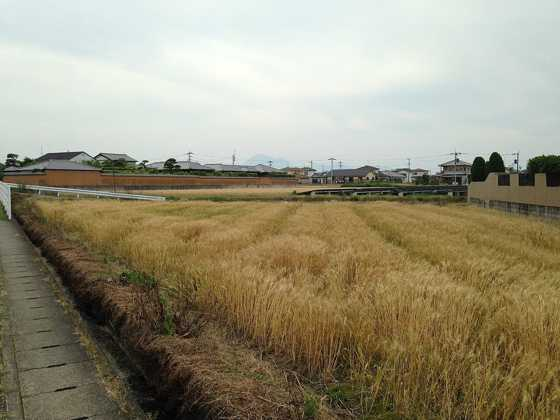

滋賀県甲賀市甲南町竜法師
ぱん屋 えみぃぃな
素材の味を、よく噛んで。ゆっくり味わうパンの時間
掲載の写真はフリー素材のイメージで、店舗の実際の様子ではありません。撮影地は当地とは限りません。
お店について
甲賀市甲南町竜法師にある「ぱん屋 えみぃぃな」。Instagramのプロフィールには「素材の味を楽しめる、よく噛んで食べるパン」と紹介されています。
一口ずつよく噛むほどに、小麦をはじめとした素材の風味が広がる。そんなパンを、毎日の食卓にどうぞ。
※店名の意味や創業の経緯は確認できていません。上記以外のこだわり・使用素材などは準備中です。

- 素材の味小麦などの素材が持つ風味を楽しむ。
- よく噛んで噛むほどに広がるおいしさ。
- 毎日のパン日々の食卓にそっと寄り添う。




パンのイメージ
具体的な商品名・価格は準備中です。以下は「よく噛んで食べるパン」のイメージとして、フリー素材の写真を並べています。実際の商品とは異なります。



口コミ(イメージ例)
以下は制作側が作成したイメージ例であり、実在のお客様の声ではありません。
イメージ例
噛むほどに小麦の味がして、ついゆっくり食べてしまいます。
イメージ例
素朴で飽きのこないパン。毎日の朝ごはんにちょうどいいです。
イメージ例
売り切れる前に行きたくなる、田舎道の小さなパン屋さん。
アクセス・ご案内
- 住所
- 〒520-3311 滋賀県甲賀市甲南町竜法師2250-1
- 電話
- 準備中
- 営業日
- 日・月・火(Instagramプロフィールの記載。最新情報はInstagramでご確認ください)
- 営業時間
- 10:00〜16:00(売り切れ次第終了/Instagramプロフィールの記載)
- 価格・駐車場
- 準備中
- @panya.emiina




写真クレジット
- p02-sourdough-wood-board.jpg:木のまな板の上のサワードウ丸パン。黄金色と木目の茶 / 作者:Missvain / CC0 / 出典(Wikimedia Commons)(リサイズ等の改変あり)
- p06-rustic-sourdough-loaves.jpg:網の上の2つの田舎パン(縦長)。濃い茶色 / 作者:Nadav Spiegelman / CC BY-SA 4.0 / 出典(Wikimedia Commons)(リサイズ等の改変あり)
- p09-baguettes.jpg:木板に交差したバゲット3本(縦長)。明るい黄金色 / 作者:jules / stonesoup / CC BY 2.0 / 出典(Wikimedia Commons)(リサイズ等の改変あり)
- p10-bread-on-board.jpg:木のまな板の丸パンとナイフ(俯瞰)。白木と茶 / 作者:Ben Garratt / CC0 / 出典(Wikimedia Commons)(リサイズ等の改変あり)
- p11-country-loaf-board.jpg:丸いカントリーブレッドとまな板。薄茶色、背景ぼかし / 作者:Shisma / CC BY 4.0 / 出典(Wikimedia Commons)(リサイズ等の改変あり)
- p01-kaiser-rolls-basket.jpg:かご入りの丸い焼きたてロールパン。きつね色 / 作者:Juan Emilio Prades Bel / CC BY 4.0 / 出典(Wikimedia Commons)(リサイズ等の改変あり)
- p13-wheat-ears-sky.jpg:青空の下の麦の穂。金色と水色 / 作者:Dominik Bartsch / CC BY 2.0 / 出典(Wikimedia Commons)(リサイズ等の改変あり)
- p05-sourdough-rounds.jpg:並んだ丸い田舎パン(右端切り抜き)。灰茶色 / 作者:Kritzolina / CC BY-SA 4.0 / 出典(Wikimedia Commons)(リサイズ等の改変あり)
- p07-homemade-sourdough-rolls.jpg:布の上の粉がけ丸パン数個。茶色と赤紫の縞布 / 作者:Tomascastelazo / CC BY-SA 4.0 / 出典(Wikimedia Commons)(リサイズ等の改変あり)
- p04-wholewheat-bread-slice.jpg:全粒粉パンの断面。濃い茶色、背景ぼかし / 作者:Rebecca Siegel / CC BY 2.0 / 出典(Wikimedia Commons)(リサイズ等の改変あり)
- p03-rolls-basket-cloth.jpg:白い布を敷いたかごのロールパン。白と黄褐色 / 作者:Daniel Sone(米国NIH/国立がん研究所の画像) / パブリックドメイン / 出典(Wikimedia Commons)(リサイズ等の改変あり)
- p08-bread-and-grains.jpg:食パン・ロール・麦穂・穀物。暖かい茶色 / 作者:Unknown photographer / パブリックドメイン / 出典(Wikimedia Commons)(リサイズ等の改変あり)
- p12-wheat-sunset.jpg:夕日と麦の穂(上下切り抜き)。オレンジ〜金色 / 作者:Dreamy Pixel / CC BY 4.0 / 出典(Wikimedia Commons)(リサイズ等の改変あり)
- p14-wheat-field-tree.jpg:麦畑と丘の上の木・小屋、雲の空。黄緑と青 / 作者:Arno Smit _entreprenerd / CC0 / 出典(Wikimedia Commons)(リサイズ等の改変あり)
- p17-wheat-field-japan.jpg:刈り入れ前の麦畑と遠景の街並み、曇り空。淡い黄褐色 / 作者:そらみみ (Soramimi) / CC BY-SA 4.0 / 出典(Wikimedia Commons)(リサイズ等の改変あり)